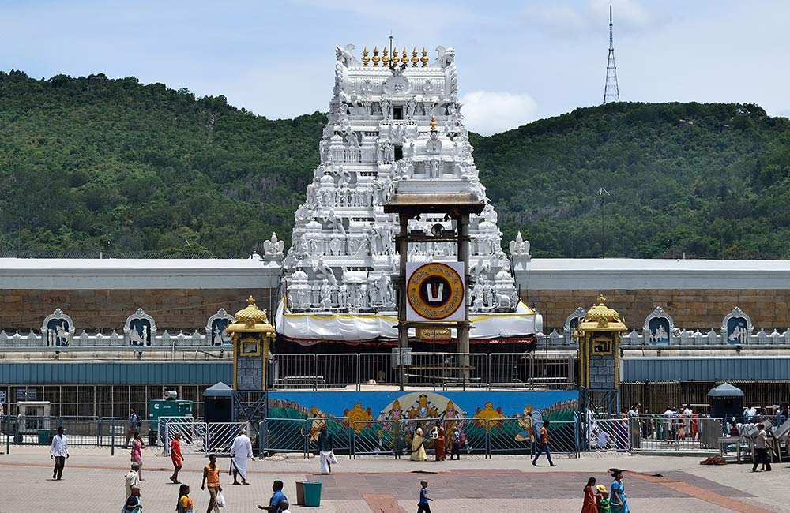
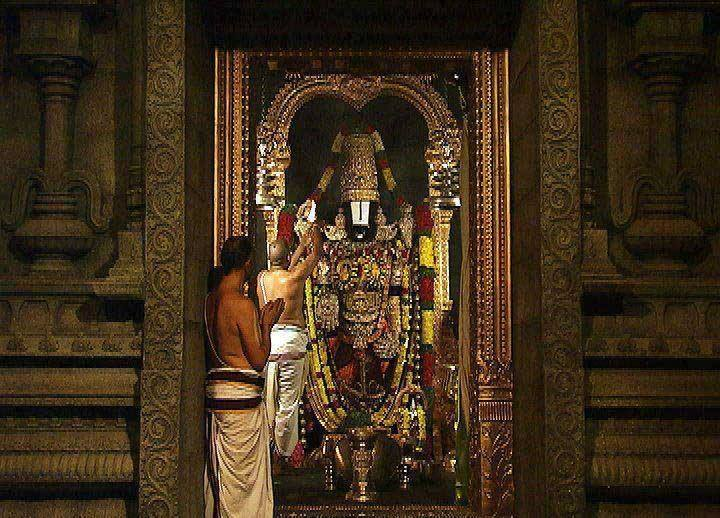
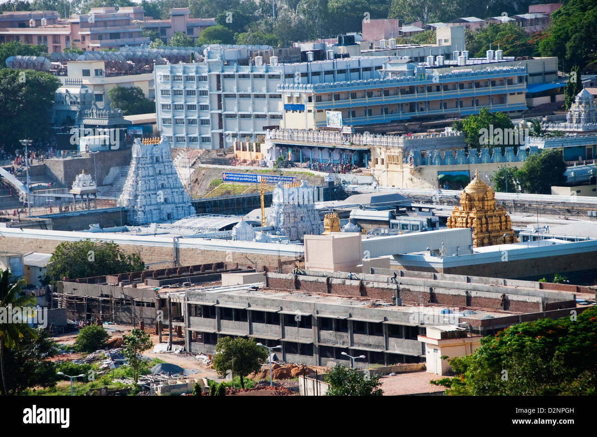
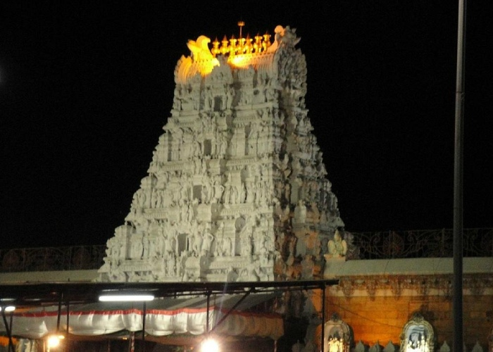

Sri Venkateswara Swami Temple
Tirumala — The city of seven sacred hills and divine Venkateswara blessings
Overview
The Sri Venkateswara Swamy Temple, commonly known as Tirupati Balaji Temple, is one of the most revered Hindu temples in India, located in the hill town of Tirumala near Tirupati (Andhra Pradesh). Dedicated to Lord Venkateswara, an incarnation of Lord Vishnu, the temple holds immense spiritual significance for devotees who believe the Lord appeared here to bless humanity in the Kali Yuga. The temple complex is set on the Venkatadri peak (one of the Seven Hills of Lord Adisesha) above sea level and is administered by the trust Tirumala Tirupati Devasthanams (TTD).
Sthala Purana
Acording to tradition, Lord Vishnu appeared as Venkateswara.
He guides devotees through all challenges of Kali Yuga.
Locals call Tirumala Kaliyuga Vaikuntha, Heaven of Kali Age.
The temple legend tells how Venkateswara chose these hills.
He made these hills his eternal abode to bless devotees.
An older shrine exists for Varahaswamy, Vishnu’s boar incarnation.
Varaha gave the land to Venkateswara honoring divine tradition.
This ritual is still observed before devotees’ daily darshan.
According to puranas, Sage Bhrigu once tested the Trimurti.
He kicked Vishnu’s chest to check his patience.
Vishnu calmly forgave him showing his infinite mercy and grace.
Lakshmi Devi felt offended and left Vaikuntha in anger.
Vishnu descended to Earth seeking reunion with Lakshmi Devi.
He appeared on Tirumala hills, residing among humans.
Here he met Padmavati, princess of Narayanavanam kingdom.
Lord Venkateswara and Padmavati were married with blessings.
The marriage symbolizes cosmic union and prosperity for devotees.
The idol of Venkateswara was installed in Ananda Nilayam sanctum.
The temple was constructed by Pallava and Vijayanagara kings.
Later dynasties expanded it with gold, gopurams, mandapams.
Today, devotees witness rituals performed as in ancient times.
Sacred hair tonsuring, Laddu prasadam, and sevas continue daily.
The temple remains one of the richest and busiest worldwide.
Moolavar
The Moolavar (main idol) of Lord Venkateswara stands in a majestic standing posture facing east in the sanctum Garbha Griha called Ananda Nilayam. The deity is richly adorned with precious jewels and the famous Namam on His forehead. Worship is performed according to Vaikhanasa Agama traditions, featuring rituals from early morning till late night.
Temple Timings and Darshans
The temple follows a structured schedule of rituals (sevas) and darshan times throughout the year: Daily Rituals (Sevas) include Suprabhatam, Thomala Seva, Archana, Sahasranama Archana, and Ekanta Seva (night ritual). Sarva Darshan (Free) operates during standard temple hours, while Special Entry Darshan and priority queues can be booked online through the official TTD site. Timings may vary slightly with festivals, but generally darshan is available from early morning till late night with breaks for scheduled ceremonies. Important: For pedestrian darshan (Divya Darshan), tokens and slots are issued to pilgrims who walk up the steps (Alipiri Mettu and Srivari Mettu)
Festivals and Temple Celebrations
The temple celebrates numerous festivals with grandeur: Srivari Brahmotsavam – a major nine‑day annual festival with elaborate processions of Utsava deities, music, and lights. Vaikunta Ekadashi – a sacred festival when the Vaikunta Dwaram (heavenly gate) is opened for devotees. Rathotsavam, Ratha Saptami, Teppotsavam (Float festival), and other special sevas mark the liturgical calendar with special darshan and offerings. The temple also performs hair tonsuring (Mokku) and offers the famous Tirupati Laddu prasadam, symbolic of divine blessings extended to every pilgrim
History
The temple’s history dates back over a thousand years, with references in ancient Tamil and Telugu scriptures. It was patronized by Cholas, Pandyas, Vijayanagara kings, and other dynasties, who expanded the temple complex and endowed it with riches. Legends say Lord Vishnu appeared as Venkateswara here to save humanity in the Kali Yuga, and the temple is considered Kaliyuga Vaikuntha, the “heaven for this era.” Pilgrims believe the deity grants wealth, happiness, and relief from troubles, which adds to its unparalleled spiritual allure.
Temple Structure and Architecture
The Tirumala Venkateshwara Temple is a fine example of magnificent , divine architecture, with intricately carved granite walls, pillars, and gopurams (towering gateways). The main Rajagopuram (east-facing tower) stands about 50 meters tall, adorned with traditional sculptures of gods, celestial beings, and mythical stories. Inside, the temple complex consists of multiple sub-shrines, sacred tanks like Swami Pushkarini, pillared halls (mandapams), and prasad distribution halls. The sanctum (Garbha Griha), called Ananda Nilayam, houses the Moolavar (main idol) of Lord Venkateswara, richly decorated with gold, silver, and diamond ornaments, including the famous Vaddanam and Srivatsa mark. Devotees also visit nearby shrines for Padmavati Devi, Varahaswamy, and Bhoga Srinivasa, creating a spiritually immersive experience.
Ongoing Poojas and Sevas
The temple follows a strict Vaikhanasa Agama ritual schedule, with poojas and sevas conducted from early morning until late night: Suprabhatam: Wake-up ceremony at 3:00 AM. Thomala Seva: Garland offering to the deity. Archana & Sahasranama Archana: Chanting of divine names with flower offerings. Kalyanotsavam: Daily ceremonial “marriage” of the deity, symbolizing cosmic union. Ekantha Seva: Final night ritual before Lord rests. Special sevas include Vishesha Pooja, Dolotsavam, Teppotsavam (float festival), and Sarva Darshan Sevas. Many devotees also perform Mokku (hair tonsuring) as an offering, continuing a centuries-old tradition.
Why Tirumala has a huge attraction for pilgrims?
Tirupati Temple is one of the busiest religious sites in the world, attracting millions of devotees yearly, because: Belief in miracles: Pilgrims trust Lord Venkateswara for blessings and solutions to worldly problems. Legendary wealth and offerings: People donate gold, cash, and valuables, and the temple prasadam (Tirupati Laddu) is iconic. Festivals & rituals: Events like Brahmotsavam and Vaikunta Ekadashi attract throngs from all over India and abroad. Accessibility & organization: TTD manages queues, special entry, lodging, and prasadam efficiently, making it easier for large crowds to visit. Cultural and historical significance: It’s not only a religious site but a symbol of South Indian culture and heritage, enhancing its appeal.
Unique Features
Golden Gopuram and Ananda Nilayam: Decorated with millions of gold coins and jewels. Seven hills of Tirumala : Seshadri Vrushabhadri Narayanadri Garudadri Anjanadri Neeladri Venkatadri Divya Darshan & Queue System: Structured to handle massive crowds efficiently. Integration with Nature: The temple sits atop the Venkatadri hills, surrounded by dense forests and sacred tanks. Continuous Charity & Seva: TTD provides free meals (Annadanam) to thousands daily. Historical inscriptions & endowments: Documenting donations from dynasties like Vijayanagara rulers, adding historical depth.
Temple Gallery




Special Darshan and Features
TTD provides different ways to experience darshan based on time, convenience, or ability: Sarva Darshan (Free) – general queue for all devotees. Special Entry Darshan – quicker entry with prior booking. Divya Darshan (Walking Devotees) – for pilgrims who walk up. Priority Darshan – for senior citizens and differently‑abled pilgrims. SRIVANI VIP Break Darshan – a special privileged darshan option linked to donations via the SRIVANI Trust. Outside the main shrine, the temple complex includes sacred tanks (Pushkarini), sub‑shrines, Annaprasadam halls (free meals), lodging for pilgrims, and facilities for sevas and accommodation.
Official Information & Contact
For official updates, darshan details, and announcements, devotees may visit the official website of the Tirumala Tirupati Devasthanams (TTD) - Temple Official Site
🌐 Official Website:
https://www.tirumala.org
📞 Temple Contact (TTD Helpline):
0877‑2277777
📧 Donation and Support Emails
cdmcttd@tirumala.org
dyeodonorcell@tirumala.org
svannadanamtrust.ttd@tirumala.org
Temple Location
You can easily reach Tirupati / Tirumala by rail, road, or air. The nearest railway station and airport are in Tirupati, about 26 km from Tirumala. After reaching Tirupati, buses, taxis, and auto services are available up the ghat road to the temple
1. Walking Paths (2 Ways up to Tirumala) There are two main pedestrian routes pilgrims use to climb up the hills: 📍 Alipiri Mettu (Standard Walking Path) ➡️ Search in your map app: “Alipiri Mettu Walking Path, Tirupati to Tirumala, Andhra Pradesh, India” 📍 Srivari Mettu (Shorter Devotional Path) ➡️ Search in your map app: “Srivari Mettu Walking Path, Tirupati to Tirumala, Andhra Pradesh, India” Both of these will show you the uphill paths used by pilgrims walking to the temple. 🚕 2. Taxi / Bus Stopping Complexes (Base & Ghat Road Stops) 📍 Tirupati Bus Stand (Start of Ghat Road) ➡️ Search: “Tirupati APSRTC Bus Stand, Tirupati, Andhra Pradesh, India” This is where many taxis, buses, and autos begin before climbing up to Tirumala. 📍 Tirumala Ghat Road Taxi & Bus Stop ➡️ Search: “Tirumala Ghat Road Stop, Tirumala, Andhra Pradesh, India” This is the main area where vehicles stop near the hilltop approaches before devotees go toward the temple. 🕉️ 3. Darshan Starting Points (Key Entrances / Queues) 📍 Sarva Darshan Queue Entrance ➡️ Search: “Tirumala Venkateswara Temple Sarva Darshan Entrance, Tirumala, Andhra Pradesh, India” This shows the place where free general darshan queue begins. 📍 ₹300 Special Entry Darshan Queue Entrance ➡️ Search: “Tirumala Venkateswara Temple Special Entry Darshan Entrance, Tirumala, Andhra Pradesh, India” This marks the location where the ₹300 paid (special entry) darshan line starts. Tip: Once you search these names in your maps app, your app will show exact pins/routes you can follow.